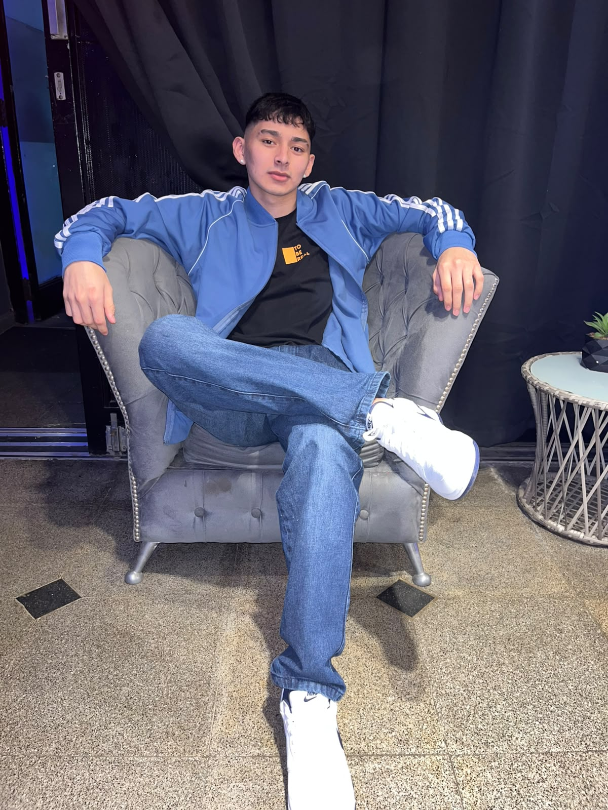

Hola, soy Nahuel Figueroa, tengo 19 años y naci el 24 de Marzo del 2007.
Actualmente me encuentro cursando mi primer año de la carrera de Analista de Sistema en el I.S.F.DyT N*
24, me gusta la programacion y las computadoras desde chico, gracias a mi padrino que me metio en este
lindo entorno.

Pasatiempos
Mis pasatiempos son convivir con mi famiia y amigos, disfruto el tiempo con ellos y en especial con mi
sobrina. Durante la semana suelo hacer deporte, ir al gimnasio, futbol o solo salir a correr a la
mañana. Otros pasatiempos son: las series y peliculas; Vikingos o La tierra media, los juegos como
Warcraft y Pokemon, tambien disfruto leyendo libros como Cancion de hielo y fuego o El nombre del
viento.